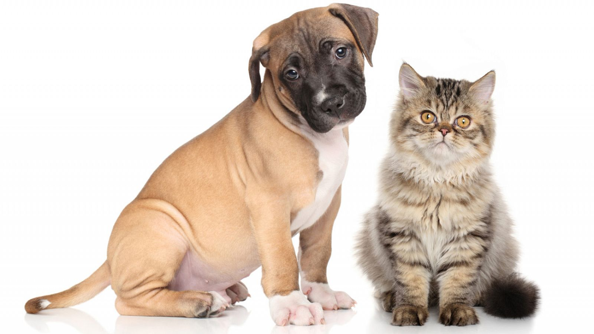

Higiene para Perros y Gatos
Mantener una buena higiene en nuestras mascotas es esencial para su salud y bienestar. Para los perros, es importante bañarlos cada 4-6 semanas con un champú específico, cepillar su pelaje semanalmente, recortar sus uñas mensualmente y limpiar sus oídos y dientes regularmente. Los gatos, por otro lado, necesitan un cepillado frecuente, recorte de uñas cada pocas semanas, y una caja de arena limpia diariamente. Inspeccionar regularmente a ambos en busca de parásitos y llevarlos al veterinario para chequeos y vacunas es crucial. Con estos cuidados, nuestros amigos peludos se mantendrán felices y saludables.
Perros:
Baño: Es importante bañarlos cada 4-6 semanas con un champú específico para perros que respete su piel y pelaje.
Cepillado: Cepillar su pelaje semanalmente ayuda a eliminar pelos muertos y a prevenir enredos y esteras.
Recorte de uñas: Las uñas deben recortarse mensualmente para evitar que se rompan o se encarnen.
Limpieza de oídos y dientes: Limpiar sus oídos y dientes regularmente previene infecciones y enfermedades dentales.
Gatos:
Cepillado: Los gatos necesitan un cepillado frecuente, especialmente las razas de pelo largo, para evitar bolas de pelo y mantener su pelaje en buen estado.
Recorte de uñas: El recorte de uñas debe realizarse cada pocas semanas para evitar que se enganchen y rompan.
Caja de arena: Mantener una caja de arena limpia diariamente es crucial para la higiene de los gatos.
Ambos:
Inspección: Inspeccionar regularmente a perros y gatos en busca de parásitos como pulgas y garrapatas es esencial.
Veterinario: Llevarlos al veterinario para chequeos y vacunas es crucial para prevenir enfermedades y mantener su salud.
Con estos cuidados, nuestros amigos peludos se mantendrán felices y saludables, disfrutando de una vida llena de bienestar.
ver mas.. »

Buena Alimentación para Perros y Gatos
Una dieta equilibrada es fundamental para la salud de nuestros perros y gatos. Los perros necesitan una alimentación que incluya proteínas de alta calidad, carbohidratos, grasas saludables, vitaminas y minerales. Los gatos, siendo carnívoros estrictos, requieren una dieta rica en proteínas animales y taurina. Es esencial proporcionarles alimentos comerciales de alta calidad o dietas caseras balanceadas bajo supervisión veterinaria. Además, siempre deben tener acceso a agua fresca. Evita darles alimentos tóxicos como chocolate, cebolla y uvas. Una buena alimentación asegura que nuestras mascotas tengan energía, un sistema inmunológico fuerte y una vida larga y saludable.
Investigación y Educación: Antes que nada, investiga y educa sobre las necesidades nutricionales específicas de perros y gatos. Entender sus requisitos dietéticos te ayudará a tomar decisiones informadas sobre qué alimentos son adecuados para ellos.
Consulta Veterinaria: Programa una consulta con tu veterinario de confianza. El veterinario podrá ofrecerte orientación personalizada basada en la edad, tamaño, nivel de actividad y cualquier condición médica específica de tu mascota.
Selecciona Alimentos de Calidad: Elige alimentos comerciales de alta calidad que estén formulados específicamente para la etapa de vida de tu mascota (cachorro, adulto, senior) y su tamaño. Busca marcas que utilicen ingredientes naturales y evita aquellos que contengan subproductos animales, colorantes artificiales y conservantes.
Alternativa de Dieta Casera: Si prefieres una dieta casera, trabaja con tu veterinario para desarrollar una receta equilibrada que incluya proteínas magras, carbohidratos saludables, grasas esenciales, vitaminas y minerales. Asegúrate de seguir las pautas de preparación y porciones adecuadas.
Proporciona Acceso a Agua Fresca: Coloca recipientes de agua fresca en varias áreas de la casa y asegúrate de que estén siempre llenos. Los perros y gatos deben tener acceso constante al agua para mantenerse hidratados.
Evita Alimentos Peligrosos: Mantén alejados de tus mascotas alimentos que puedan ser dañinos para ellos, como el chocolate, cebolla, uvas, aguacate, entre otros. Estos alimentos pueden causar desde molestias estomacales hasta problemas de salud graves e incluso ser mortales en algunos casos.
Observa y Ajusta: Observa el peso corporal, el nivel de energía y el estado de ánimo de tu mascota. Si notas cambios significativos, consulta con tu veterinario para ajustar la dieta según sea necesario.
Visitas de Seguimiento: Programa visitas regulares de seguimiento con tu veterinario para evaluar la salud y el bienestar de tu mascota. El veterinario puede realizar ajustes en la dieta según sea necesario para garantizar que tu perro o gato estén recibiendo los nutrientes adecuados.
Siguiendo estos pasos, puedes asegurarte de que tu perro o gato reciban una alimentación adecuada que promueva su salud y felicidad a lo largo de su vida.
ver mas.. »

Cómo Entretener a tu Perro y Gato
Mantener a tus mascotas entretenidas es clave para su bienestar. Los perros disfrutan de paseos diarios, juegos de buscar la pelota, y juguetes interactivos que estimulan su mente. Los gatos, por su parte, adoran los juguetes que imitan el movimiento de presas, como plumas y láseres, así como los árboles para trepar y rascadores. Ambos necesitan tiempo de calidad contigo, así que dedica tiempo a jugar y explorar nuevas actividades juntos. Proveerles variedad en sus juguetes y juegos ayuda a mantenerlos felices y saludables.
Conoce sus Preferencias: Observa el comportamiento y las preferencias de tus mascotas para entender qué tipos de juegos y juguetes disfrutan más. Algunos perros pueden preferir juegos de buscar, mientras que a otros les encanta masticar juguetes resistentes. Los gatos pueden disfrutar de juguetes que imitan presas o de actividades de caza.
Paseos y Ejercicio: Para los perros, los paseos diarios son esenciales para su bienestar físico y mental. Asegúrate de sacar a pasear a tu perro regularmente y proporcionarle la oportunidad de explorar y ejercitarse. Esto no solo ayuda a mantenerlos saludables, sino que también les proporciona estimulación mental.
Juguetes Interactivos: Proporciona a tus perros juguetes interactivos que desafíen su mente y los mantengan ocupados. Los juguetes de relleno con golosinas o juguetes que emiten sonidos al ser manipulados pueden ser especialmente divertidos y estimulantes.
Estimulación para Gatos: Los gatos necesitan oportunidades para cazar y jugar. Ofrece juguetes que imiten el movimiento de presas, como plumas atadas a una cuerda o juguetes que se muevan de manera errática. Los láseres y los juguetes que pueden ser perseguidos también pueden ser muy divertidos para los gatos.
Áreas de Juego Designadas: Crea áreas designadas para el juego donde tus mascotas se sientan seguras y cómodas. Para los gatos, considera instalar un árbol para trepar o un rascador para satisfacer su instinto natural de afilarse las uñas y trepar.
Tiempo de Calidad Contigo: Dedica tiempo cada día para jugar y pasar tiempo de calidad con tus mascotas. El vínculo que desarrollas a través del juego es importante para su bienestar emocional y para fortalecer tu relación con ellos.
Rotación de Juguetes: Introduce variedad rotando los juguetes de tus mascotas regularmente. Esto ayuda a mantener su interés y evita que se aburran de los mismos juguetes una y otra vez.
Explora Nuevas Actividades: Prueba nuevas actividades y juegos para mantener el interés de tus mascotas. Esto puede incluir juegos de olfateo para perros o enseñar trucos nuevos a tus gatos.
Siguiendo estos pasos, puedes asegurarte de que tus perros y gatos estén entretenidos, felices y saludables.
ver mas.. »